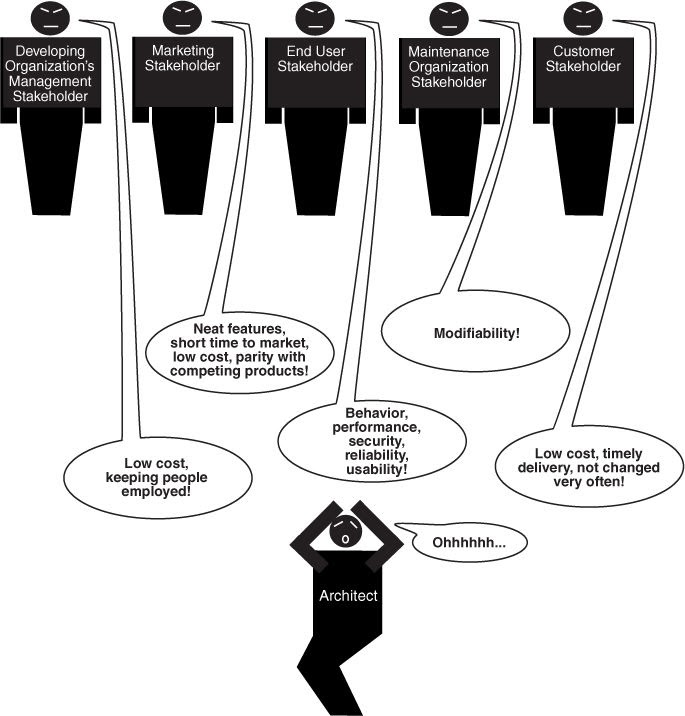
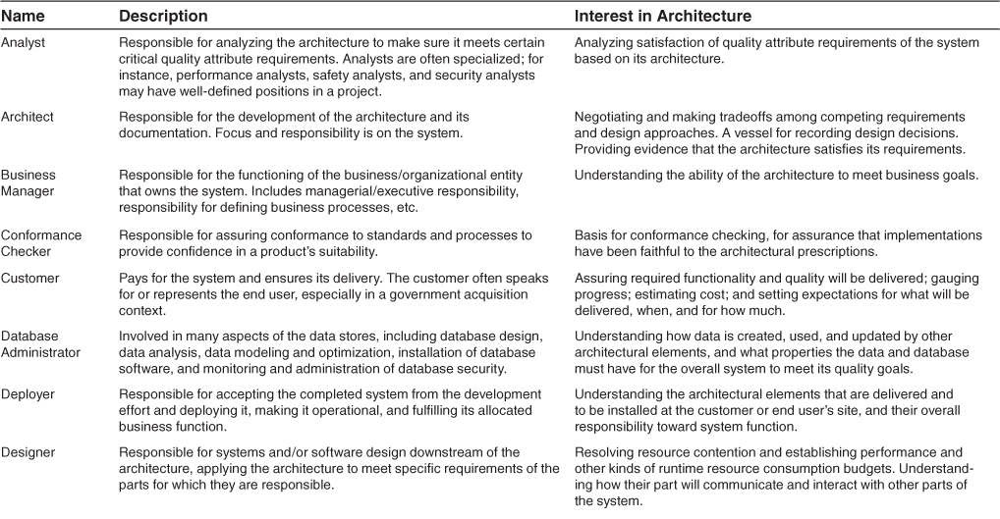
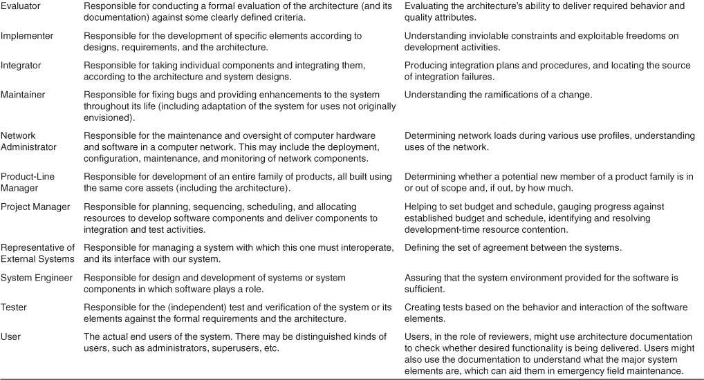

name: inverse layout: true class: center, middle, inverse --- # Arquitetura de Software - Aula 03 ## Prof. Marc Queiroz --- layout: false class: inverse, middle ## Os muitos contextos da arquitetura de software As pessoas em Londres pensam em Londres como o centro do mundo, enquanto os nova-iorquinos pensam que o mundo termina a cinco quilômetros de Manhattan. Autor: Toby Young --- layout: false class: inverse, middle Em 1976, a New Yorker capa de uma revista apresentava um cartoon de Saul Steinberg mostrando a visão de mundo de um nova-iorquino. Você provavelmente já viu; caso contrário, você pode encontrá-lo facilmente online. Olhando para o oeste da 9ª Avenida em Manhattan, a ilustração mostra a 10ª Avenida, depois o largo Rio Hudson, depois uma estreita faixa de terra completamente indefinida chamada "Jersey", seguida por uma faixa um pouco mais espessa de terra representando todo o resto dos Estados Unidos Estados. --- layout: false class: inverse, middle --- layout: false class: inverse, middle Os Estados Unidos quase vazios têm uma ou duas montanhas de desenho animado aqui e ali e algumas cidades colocadas aleatoriamente “lá fora”, e é flanqueado por “Canadá” inexpressivo à direita e “México” à esquerda. Além está o Oceano Pacífico, apenas um pouco mais largo que o Hudson, e além dele estão minúsculas formas amorfas para o Japão, a China e a Rússia, que é praticamente o mundo da perspectiva de uma nova-iorquina. --- layout: false class: inverse, middle Em um livro sobre arquitetura, é tentador ver a arquitetura da mesma maneira, como a peça mais importante do universo do software. Nesta aula, colocamos a arquitetura de software em seu lugar, mostrando como ela apóia e é informada por outras forças e atividades críticas nos vários contextos nos quais desempenha um papel. --- layout: false class: inverse, middle Esses contextos, em torno dos quais estruturamos este material, são os seguintes: • Técnicos. Que função técnica a arquitetura de software desempenha no sistema ou sistemas dos quais faz parte? • Ciclo de vida do projeto. Como uma arquitetura de software se relaciona com as outras fases de um ciclo de vida de desenvolvimento de software? --- layout: false class: inverse, middle • Negócios. Como a presença de uma arquitetura de software afeta o ambiente de negócios de uma organização? • Profissional. Qual é a função de um arquiteto de software em uma organização ou projeto de desenvolvimento? --- layout: false class: inverse, middle Todos esses contextos se desenrolam ao longo do livro, mas esta aula apresenta cada um deles. Embora os contextos sejam imutáveis, as especificações do seu sistema podem mudar com o tempo. Um desafio para o arquiteto é imaginar o que pode mudar em seu contexto e adotar mecanismos para proteger o sistema e seu desenvolvimento se as mudanças previstas acontecerem. --- layout: false class: inverse, middle ## 3.1. Arquitetura em um contexto técnico As arquiteturas inibem ou permitem a obtenção de atributos de qualidade, e um uso de uma arquitetura é para apoiar o raciocínio sobre as consequências da mudança nos atributos de qualidade específicos importantes para um sistema em seu início. As arquiteturas inibem ou possibilitam a obtenção de atributos de qualidade --- layout: false class: inverse, middle O Capítulo 2 relacionou treze razões pelas quais a arquitetura de software é importante e merece estudo. Vários desses motivos lidam com exigências que vão além dos limites de um projeto de desenvolvimento específico (como a comunicação entre as partes interessadas, muitas das quais podem residir fora da organização do projeto). Outros lidam com aspectos não técnicos de um projeto (como a influência da arquitetura na estrutura da equipe de um projeto ou sua contribuição para uma estimativa precisa do orçamento e do cronograma). --- layout: false class: inverse, middle Os primeiros três motivos nessa Lista dos Treze tratam especificamente do impacto técnico de uma arquitetura em cada sistema que a usa: 1. Uma arquitetura inibirá ou permitirá a obtenção dos atributos de qualidade de um sistema. --- layout: false class: inverse, middle 2. Você pode prever muitos aspectos das qualidades de um sistema estudando sua arquitetura. 3. Uma arquitetura torna mais fácil raciocinar e gerenciar as mudanças. --- layout: false class: inverse, middle Tudo isso tem a ver com o efeito da arquitetura nos atributos de qualidade de um sistema, embora o primeiro afirme isso de forma mais explícita. Embora todas as razões enumeradas no Capítulo 2 sejam declarações válidas da contribuição da arquitetura, provavelmente a razão mais importante para que ela mereça atenção é seu efeito crítico sobre os atributos de qualidade. --- layout: false class: inverse, middle Este é um ponto tão crítico que, com sua indulgência, adicionaremos mais alguns pontos à lista de marcadores que fornecemos na Seção 2.1. Lembrar? Aquele que começou assim: --- layout: false class: inverse, middle • Se o seu sistema requer alto desempenho, você precisa prestar atenção ao gerenciamento do comportamento baseado no tempo dos elementos, seu uso de recursos compartilhados e a frequência e o volume da comunicação entre os elementos. --- layout: false class: inverse, middle Para essa lista, vamos adicionar o seguinte: • Se você se preocupa com a disponibilidade de um sistema, você tem que se preocupar com a forma como componentes assumir um para o outro em caso de um fracasso, e como as responde sistema a uma falha. --- layout: false class: inverse, middle • Se você se preocupa com a usabilidade, você tem que se preocupar sobre como isolar os detalhes da interface do usuário e os elementos responsáveis pela experiência do usuário a partir do resto do sistema, de modo que essas coisas podem ser adaptados e melhorados ao longo do tempo. --- layout: false class: inverse, middle • Se você se preocupa com a capacidade de teste do seu sistema, você tem que estar preocupado com a possibilidade de teste de elementos individuais, o que significa fazer seu estado observável e controlável, mais compreensão do comportamento emergente dos elementos que trabalham juntos. --- layout: false class: inverse, middle • Se você se preocupa com a segurança de seu sistema, você tem que se preocupar com o envelope comportamental dos elementos e do comportamento emergente dos elementos que trabalham em concerto. --- layout: false class: inverse, middle • Se você se preocupa com a interoperabilidade entre o sistema e outro, você tem que se preocupar com quais elementos são responsáveis por interações externas de modo que você pode controlar essas interações. --- layout: false class: inverse, middle Essas e outras representações dizem a mesma coisa de maneiras diferentes: se você se preocupa com esse atributo de qualidade, deve se preocupar com essas decisões, todas elas totalmente arquitetônicas por natureza. Uma arquitetura inibe ou ativa os atributos de qualidade de um sistema. E, inversamente, nada mais influencia uma arquitetura mais do que os requisitos de atributo de qualidade que ela deve satisfazer. --- layout: false class: inverse, middle Por que está faltando funcionalidade na lista anterior? Ele está ausente porque a arquitetura fornece principalmente containers nos quais o arquiteto coloca a funcionalidade. A funcionalidade não é tanto um motivador para a arquitetura, mas uma consequência dela. Arquiteturas e o ambiente técnico --- layout: false class: inverse, middle O ambiente técnico atual quando uma arquitetura é projetada influenciará essa arquitetura. Pode incluir práticas padrão da indústria ou técnicas de engenharia de software predominantes na comunidade profissional de arquitetos. É um arquiteto corajoso que, no ambiente de hoje, pelo menos não considera um design de sistema de informação baseado na web, orientado a objetos, orientado a serviços, com mobilidade, nuvem e redes sociais. Nem sempre foi assim, e não será assim daqui a dez anos, quando outra safra de tendências tecnológicas vier à tona. --- layout: false class: inverse, middle ## 3.2. Arquitetura em um contexto de ciclo de vida do projeto Os processos de desenvolvimento de software são abordagens padrão para o desenvolvimento de sistemas de software. Eles impõem uma disciplina aos engenheiros de software e, mais importante, às equipes de engenheiros de software. Eles dizem aos membros da equipe o que fazer a seguir. Existem quatro processos dominantes de desenvolvimento de software, que descrevemos aproximadamente na ordem em que ganharam destaque: --- layout: false class: inverse, middle 1. Cachoeira. Por muitos anos, o modelo Waterfall dominou o campo de desenvolvimento de software. O modelo em cascata organizou o ciclo de vida em uma série de atividades sequenciais conectadas, cada uma com condições de entrada e saída e um relacionamento formalizado com seus vizinhos a montante e a jusante. O processo começou com a especificação de requisitos, seguida pelo design, implementação, integração, teste e instalação, tudo seguido pela manutenção. --- layout: false class: inverse, middle Caminhos de feedback das etapas posteriores para as anteriores permitiram a revisão de artefatos (documentos de requisitos, documentos de design, etc.) conforme a necessidade, com base no conhecimento adquirido no estágio posterior. Por exemplo, os designers podem resistir a requisitos excessivamente rigorosos, que então seriam retrabalhados e diminuiriam. Testar os defeitos descobertos desencadearia a reimplementação (e talvez até mesmo o redesenho). E então o ciclo continuou. --- layout: false class: inverse, middle 2 Iterativo. Com o tempo, os caminhos de feedback do modelo em cascata tornaram-se tão pronunciados que ficou claro que era melhor pensar no desenvolvimento de software como uma série de ciclos curtos através das etapas -alguns requisitos levam a algum design, que pode ser implementado e testado enquanto o os requisitos do próximo ciclo estão sendo capturados e projetados. Esses ciclos são chamados de iterações, no sentido de iterar em direção à solução de software final para o problema fornecido. --- layout: false class: inverse, middle Cada iteração deve entregar algo útil e funcional. O truque aqui é descobrir com antecedência os requisitos que têm o efeito de maior alcance no design; o perigo correspondente é ignorar requisitos que, quando descobertos posteriormente, irão virar as decisões de design tomadas até agora. Um processo iterativo especialmente conhecido é chamado de Processo Unificado (originalmente denominado Rational Unified Process, em homenagem ao Rational Software, que o originou). --- layout: false class: inverse, middle Ele define quatro fases de cada iteração: início, elaboração, construção e transição. Um conjunto de casos de uso escolhidos define os objetivos para cada iteração, e as iterações são ordenadas para tratar os maiores riscos primeiro. --- layout: false class: inverse, middle 3 Agile. O termo “Desenvolvimento de software Agile” refere-se a um grupo de metodologias de desenvolvimento de software, as mais conhecidas das quais incluem Scrum, Extreme Programming e Crystal Clear. Essas metodologias são todas incrementais e iterativas. Como tal, pode-se considerar algumas metodologias iterativas como Agile. O que distingue as práticas Agile é a entrega precoce e frequente de software funcional, colaboração próxima entre desenvolvedores e clientes, equipes auto-organizadas e um foco na adaptação às circunstâncias em mudança (como requisitos que chegam tarde). --- layout: false class: inverse, middle Todas as metodologias Agile se concentram no trabalho em equipe, adaptabilidade e estreita colaboração (tanto dentro da equipe quanto entre os membros da equipe e clientes / usuários finais). Essas metodologias geralmente evitam um trabalho inicial substancial, pressupondo que os requisitos sempre mudam e continuam a mudar ao longo do ciclo de vida do projeto. Dessa forma, pode parecer que as metodologias Agile e a arquitetura não podem coexistir de maneira feliz. --- layout: false class: inverse, middle 4 Desenvolvimento orientado por modelo. O desenvolvimento orientado a modelos é baseado na ideia de que os humanos não deveriam estar escrevendo código em linguagens de programação, mas deveriam estar criando modelos do domínio, a partir dos quais o código é gerado automaticamente. Os humanos criam um modelo independente de plataforma (PIM), que é combinado com um modelo de definição de plataforma (PDM) para gerar o código em execução. Dessa forma, o PIM é uma realização pura dos requisitos funcionais, enquanto o PDM aborda as especificações da plataforma e os atributos de qualidade. --- layout: false class: inverse, middle Todos esses processos incluem o design entre suas obrigações e, como a arquitetura é um tipo especial de design, a arquitetura encontra um lar em cada um. Mudar de um processo de desenvolvimento para outro no meio de um projeto requer que o arquiteto salve informações úteis do processo antigo e determine como integrá-lo ao novo processo. --- layout: false class: inverse, middle Não importa qual processo de desenvolvimento de software ou modelo de ciclo de vida você esteja usando, há uma série de atividades envolvidas na criação de uma arquitetura de software, usando essa arquitetura para realizar um design completo e, em seguida, implementar e gerenciar a evolução de um alvo sistema ou aplicativo. O processo que você usará determinará com que frequência e quando você revisitará e elaborará cada uma dessas atividades. Essas atividades incluem: --- layout: false class: inverse, middle 1) Criar um caso de negócios para o sistema 2) Compreender os requisitos significativos da arquitetura 3) Criar ou selecionar a arquitetura --- layout: false class: inverse, middle 4) Documentar e comunicar a arquitetura 5) Analisar ou avaliar a arquitetura 6) Implementar e testar o sistema com base em a arquitetura --- layout: false class: inverse, middle 7) Garantindo que a implementação esteja em conformidade com a arquitetura --- layout: false class: inverse, middle ## Fazendo um Business Case para o Sistema Um business case é, resumidamente, uma justificativa de um investimento organizacional. É uma ferramenta que o ajuda a tomar decisões de negócios, prevendo como elas afetarão sua organização. Inicialmente, a decisão será ir ou não para buscar uma nova oportunidade ou abordagem de negócios. Após o início, o business case é revisado para avaliar a precisão das estimativas iniciais e, em seguida, atualizado para examinar ângulos novos ou alternativos sobre a oportunidade. --- layout: false class: inverse, middle Ao documentar os custos, benefícios e riscos esperados, o business case serve como um repositório dos dados de negócios e marketing. Nesta função, a administração usa o business case para determinar possíveis cursos de ação. --- layout: false class: inverse, middle Conhecer as metas de negócios para o sistema também é crítico na criação de um caso de negócios para um sistema. --- layout: false class: inverse, middle Criar um business case é mais amplo do que simplesmente avaliar a necessidade de um sistema no mercado. É uma etapa importante na definição e restrição de quaisquer requisitos futuros. Quanto deve custar o produto? Qual é o seu mercado-alvo? Qual é o tempo de comercialização e a vida útil almejados? Será necessário fazer interface com outros sistemas? Existem limitações de sistema dentro das quais ele deve funcionar? --- layout: false class: inverse, middle Todas essas são questões sobre as quais os arquitetos do sistema têm conhecimento especializado; eles devem contribuir para as respostas. Essas questões não podem ser decididas apenas por um arquiteto, mas se um arquiteto não for consultado na criação do caso de negócios, a organização pode não ser capaz de atingir seus objetivos de negócios. Normalmente, um business case é criado antes do início de um projeto, mas também pode ser revisitado durante o curso do projeto para a organização determinar se deve continuar fazendo investimentos no projeto. --- layout: false class: inverse, middle Se as circunstâncias assumidas na versão inicial do business case mudarem, o arquiteto pode ser chamado para estabelecer como o sistema mudará para refletir o novo conjunto de circunstâncias. --- layout: false class: inverse, middle ## Compreendendo os requisitos arquiteturalmente significativos Há uma variedade de técnicas para extrair requisitos das partes interessadas. Por exemplo, a análise orientada a objetos usa casos de uso e cenários para incorporar requisitos. Os sistemas críticos de segurança às vezes usam abordagens mais rigorosas, como modelos de máquina de estado finito ou linguagens de especificação formal. --- layout: false class: inverse, middle Uma decisão fundamental com respeito ao sistema que está sendo construído é até que ponto ele é uma variação de outros sistemas que foram construídos. Por ser um sistema raro hoje em dia que não seja semelhante a outros sistemas, as técnicas de elicitação de requisitos envolvem o entendimento das características desses sistemas anteriores. --- layout: false class: inverse, middle Outra técnica que nos ajuda a entender os requisitos é a criação de protótipos. Os protótipos podem ajudar a modelar e explorar o comportamento desejado, projetar a interface do usuário ou analisar a utilização de recursos. Isso ajuda a tornar o sistema “real” aos olhos de seus stakeholders e pode rapidamente construir suporte para o projeto e catalisar decisões sobre o design do sistema e o design de sua interface de usuário. --- layout: false class: inverse, middle ## Criando e Selecionando a Arquitetura No livro histórico The Mythical Man-Month, Fred Brooks argumenta vigorosa e eloqüentemente que a integridade conceitual é a chave para o projeto do sistema e que a integridade conceitual só pode ser obtida por um pequeno número de mentes se reunindo para projetar o arquitetura do sistema. Também acreditamos firmemente nisso. A boa arquitetura quase nunca resulta como um fenômeno emergente. --- layout: false class: inverse, middle ## Documentando e comunicando a arquitetura Para que a arquitetura seja eficaz como a espinha dorsal do design do projeto, ela deve ser comunicada de forma clara e inequívoca a todas as partes interessadas. Os desenvolvedores devem compreender as atribuições de trabalho que a arquitetura exige deles, os testadores devem compreender a estrutura de tarefas que a arquitetura impõe a eles, o gerenciamento deve compreender as implicações de agendamento que ela contém e assim por diante. --- layout: false class: inverse, middle Para esse fim, a documentação da arquitetura deve ser informativa, inequívoca e legível por muitas pessoas com experiências variadas. A documentação arquitetônica também deve ser mínima e destinada às partes interessadas que a usarão; não somos fãs de documentação apenas para fins de documentação. Discutimos a documentação de arquiteturas e fornecemos exemplos de boas práticas de documentação. Também discutiremos como manter a arquitetura atualizada quando houver uma mudança em algo do qual a documentação da arquitetura depende. --- layout: false class: inverse, middle ## Analisando e avaliando a arquitetura Em qualquer processo de projeto, vários projetos candidatos serão considerados. Alguns serão rejeitados imediatamente. Outros lutarão pela primazia. Escolher entre esses projetos concorrentes de forma racional é um dos maiores desafios do arquiteto. --- layout: false class: inverse, middle Avaliar uma arquitetura quanto às qualidades que ela suporta é essencial para garantir que o sistema construído a partir dessa arquitetura satisfaça as necessidades de seus stakeholders. As técnicas de análise para avaliar os atributos de qualidade que uma arquitetura confere a um sistema se tornaram muito mais difundidas na última década. As técnicas baseadas em cenário fornecem uma das abordagens mais gerais e eficazes para avaliar uma arquitetura. --- layout: false class: inverse, middle ## Implementando e testando o sistema com base na arquitetura Se o arquiteto projeta e analisa um belo , arquitetura conceitualmente sólida que os implementadores então ignoram, qual era o ponto? Se a arquitetura é importante o suficiente para devotar o tempo e o esforço de suas melhores mentes, então é igualmente importante manter os desenvolvedores fiéis às estruturas e protocolos de interação restringidos pela arquitetura. Ter uma arquitetura explícita e bem comunicada é o primeiro passo para garantir a conformidade arquitetônica. --- layout: false class: inverse, middle Ter um ambiente ou infraestrutura que auxilie ativamente os desenvolvedores na criação e manutenção da arquitetura (em oposição a apenas o código) é melhor. --- layout: false class: inverse, middle Há muitos motivos pelos quais os desenvolvedores podem não ser fiéis à arquitetura: Ela pode não ter sido devidamente documentada e disseminada. Pode ser muito confuso. Pode ser que o arquiteto não tenha construído suporte no nível do solo para a arquitetura (especialmente se apresentar uma maneira diferente de “fazer negócios” da que os desenvolvedores estão acostumados) e, portanto, os desenvolvedores resistem a ela. Ou os desenvolvedores podem querer implementar a arquitetura sinceramente, mas, sendo humanos, eles ocasionalmente escorregam. --- layout: false class: inverse, middle Isso não quer dizer que a arquitetura não deva mudar, mas não deve mudar puramente com base nos caprichos dos desenvolvedores, porque eles podem não ter uma visão geral. --- layout: false class: inverse, middle ## Garantindo que a implementação esteja de acordo com a arquitetura Finalmente, quando uma arquitetura é criada e usada, ela entra em uma fase de manutenção. Vigilância é necessária para garantir que a arquitetura real e sua representação permaneçam fiéis uma à outra durante esta fase. E quando eles ficam significativamente fora de sincronia, esforço deve ser feito para consertar a implementação ou atualizar a documentação arquitetônica. --- layout: false class: inverse, middle Embora os trabalhos nesta área ainda sejam relativamente imaturos, tem sido uma área de intensa atividade nos últimos anos. --- layout: false class: inverse, middle ## 3.3 Arquitetura em um contexto de negócios As arquiteturas e os sistemas não são construídos levianamente. Eles atendem a alguns propósitos comerciais, embora, conforme mencionado antes, esses propósitos possam mudar com o tempo. --- layout: false class: inverse, middle ## Arquiteturas e metas de negócios Sistemas são criados para satisfazer as metas de negócios de uma ou mais organizações. Organizações de desenvolvimento querem ter lucro, ou conquistar mercado, ou permanecer no negócio, ou ajudar seus clientes a fazer melhor seu trabalho, ou manter sua equipe com empregos remunerados, ou fazer seus acionistas felizes, ou um pouco de cada um. Os clientes têm seus próprios objetivos para adquirir um sistema, geralmente envolvendo algum aspecto para tornar suas vidas mais fáceis ou mais produtivas. --- layout: false class: inverse, middle Outras organizações envolvidas no ciclo de vida de um projeto, como subcontratados ou agências reguladoras do governo, têm seus próprios objetivos para lidar com o sistema. Os arquitetos precisam entender quem são as organizações investidas e quais são seus objetivos. Muitos desses objetivos terão uma profunda influência na arquitetura. --- layout: false class: inverse, middle Muitos objetivos de negócios se manifestarão como requisitos de atributos de qualidade. Na verdade, cada atributo de qualidade - como um tempo de resposta visível para o usuário ou flexibilidade de plataforma ou segurança rígida ou qualquer uma de uma dúzia de outras necessidades - deve se originar de algum propósito superior que pode ser descrito em termos de valor agregado. --- layout: false class: inverse, middle Se perguntarmos, por exemplo, “Por que você deseja que este sistema tenha um tempo de resposta realmente rápido?” podemos ouvir que isso diferenciará o produto de sua concorrência e permitirá que a organização em desenvolvimento conquiste participação de mercado. --- layout: false class: inverse, middle Alguns objetivos de negócios, no entanto, não aparecerão na forma de requisitos. Conhecemos um arquiteto de software que foi informado por seu gerente que a arquitetura deveria incluir um banco de dados. O arquiteto ficou perplexo, porque os requisitos para o sistema realmente não garantem um banco de dados e o projeto do arquiteto havia evitado muito bem colocá-lo, simplificando o projeto e reduzindo o custo do produto. O arquiteto ficou perplexo, isto é, até que o gerente lembrou ao arquiteto que o departamento de banco de dados da empresa estava com excesso de pessoal e pouco trabalho. --- layout: false class: inverse, middle Eles precisavam de algo para fazer! O arquiteto colocou no banco de dados e tudo correu bem. Esse tipo de meta de negócios - manter a equipe com emprego remunerado - provavelmente não aparecerá em nenhum documento de requisitos, mas se o arquiteto não tivesse conseguido cumpri-la, o gerente teria considerado a arquitetura inaceitável, assim como o cliente teria se ela falhou em fornecer uma peça-chave de funcionalidade. --- layout: false class: inverse, middle Outros objetivos de negócios ainda não afetam a arquitetura de forma alguma. Uma meta de negócios de redução de custos pode ser alcançada pedindo aos funcionários que trabalhem em casa, ou diminuindo o termostato do escritório no inverno, ou usando menos papel nas impressoras. --- layout: false class: inverse, middle  A Figura 3.2 ilustra os principais pontos da discussão anterior. Na figura, as setas significam “leva para”. As setas sólidas destacam os relacionamentos de maior interesse para nós. --- layout: false class: inverse, middle Figura 3.2. Alguns objetivos de negócios podem levar a requisitos de atributos de qualidade (que levam a arquiteturas), ou levar diretamente a decisões de arquitetura, ou levar a soluções não arquitetônicas. --- layout: false class: inverse, middle ## Arquiteturas e a organização de desenvolvimento --- layout: false class: inverse, middle Uma organização de desenvolvimento contribui com muitos dos objetivos de negócios que influenciam uma arquitetura. Por exemplo, se a organização tiver uma abundância de programadores experientes e ociosos, qualificados em comunicações ponto a ponto, então uma arquitetura ponto a ponto pode ser a abordagem apoiada pela gerência. Do contrário, pode muito bem ser rejeitado. Isso apoiaria o objetivo do negócio, talvez implícito, de não querer contratar novos funcionários ou dispensar os funcionários existentes, ou não querer investir significativamente na reciclagem dos funcionários existentes. --- layout: false class: inverse, middle De maneira mais geral, uma organização geralmente investe em ativos, como arquiteturas existentes e produtos baseados nelas. A base de um projeto de desenvolvimento pode ser que o sistema proposto seja o próximo em uma sequência de sistemas semelhantes, e as estimativas de custo assumem um alto grau de reutilização de ativos e um alto grau de habilidade e produtividade dos programadores. --- layout: false class: inverse, middle Além disso, uma organização pode desejar fazer um investimento comercial de longo prazo em uma infraestrutura para perseguir objetivos estratégicos e pode ver o sistema proposto como um meio de financiar e estender essa infraestrutura. Por exemplo, uma organização pode decidir que deseja desenvolver uma reputação de suporte a soluções baseadas em computação em nuvem ou arquitetura orientada a serviços ou computação em tempo real de alto desempenho. --- layout: false class: inverse, middle Essa meta de longo prazo seria apoiada, em parte, por investimentos em infraestrutura que afetarão a organização em desenvolvimento: um grupo de computação em nuvem precisa ser contratado ou ampliado, a infraestrutura precisa ser comprada ou talvez o treinamento precise ser planejado. --- layout: false class: inverse, middle Finalmente, a estrutura organizacional pode moldar a arquitetura de software e vice-versa. As organizações costumam ser organizadas em torno de conceitos de tecnologia e aplicativo: um grupo de banco de dados, um grupo de rede, uma equipe de regras de negócios, um grupo de interface de usuário. Portanto, a identificação explícita de um subsistema distinto na arquitetura frequentemente levará à criação de um grupo com o nome do subsistema. --- layout: false class: inverse, middle Além disso, se a equipe de interface do usuário frequentemente precisa se comunicar com a equipe de regras de negócios, essas equipes precisarão ser co-localizadas ou alguns meios regulares de comunicação e coordenação. --- layout: false class: inverse, middle ## 3.4 Arquitetura em um contexto profissional O que os arquitetos fazem? Como você se torna um arquiteto? Nesta seção, falaremos sobre as muitas facetas de ser um arquiteto que vão além do que você aprendeu em um curso de programação ou engenharia de software. --- layout: false class: inverse, middle Você provavelmente já sabe que os arquitetos precisam mais do que apenas habilidades técnicas. Os arquitetos precisam explicar a uma parte interessada ou a outra as prioridades escolhidas para as diferentes propriedades e por que determinadas partes interessadas não estão tendo todas as suas expectativas atendidas. Para ser um arquiteto eficaz, então, você precisará de habilidades diplomáticas, de negociação e de comunicação. --- layout: false class: inverse, middle Você executará muitas atividades além da produção direta de uma arquitetura. Essas atividades, que chamamos de deveres, formam a espinha dorsal da competência individual de arquitetura. Pesquisamos o amplo conjunto de informações destinadas aos arquitetos (como sites, cursos, livros e descrições de cargos para arquitetos), bem como aos arquitetos em atividade, e as funções são apenas um aspecto. --- layout: false class: inverse, middle Escritores sobre arquitetos também falam de habilidades e conhecimento. Por exemplo, os arquitetos precisam ser capazes de comunicar ideias claramente e precisam ter conhecimento atualizado sobre (por exemplo) padrões ou plataformas de banco de dados ou padrões de serviços da web. --- layout: false class: inverse, middle Deveres, habilidades e conhecimento formam uma tríade na qual repousa a competência em arquitetura. Você precisará estar envolvido no apoio à gestão e no trato com os clientes. Você precisará gerenciar uma carga de trabalho diversa e ser capaz de alternar contextos com frequência. Você precisará conhecer as considerações comerciais. Você precisará ser um líder aos olhos dos desenvolvedores e da gestão. --- layout: false class: inverse, middle ## Histórico e experiência dos arquitetos Somos todos produtos de nossas experiências, arquitetos incluídos. Se você obteve bons resultados usando uma abordagem de arquitetura específica, como cliente-servidor de três camadas ou publicação-assinatura, é provável que você tente a mesma abordagem em um novo esforço de desenvolvimento. Por outro lado, se sua experiência com uma abordagem foi desastrosa, você pode relutar em tentar novamente. --- layout: false class: inverse, middle As escolhas arquitetônicas também podem vir de sua educação e treinamento, exposição a padrões arquitetônicos de sucesso ou exposição a sistemas que funcionaram particularmente mal ou bem. Você também pode experimentar um padrão arquitetônico ou técnica aprendida em um livro ou em um curso de treinamento. --- layout: false class: inverse, middle Por que mencionamos isso? Porque você (e sua organização) devem estar cientes dessa influência, para que possam gerenciá-la com o melhor de suas habilidades. Isso pode significar que você examinará criticamente as soluções arquitetônicas propostas, para garantir que elas não sejam simplesmente o caminho de menor resistência. Isso pode significar que você fará cursos de treinamento em novas tecnologias interessantes. Isso pode significar que você vai investir em projetos exploratórios, para “testar a água” de uma nova tecnologia. --- layout: false class: inverse, middle Cada uma dessas etapas é uma forma de gerenciar proativamente seu histórico e experiência. --- layout: false class: inverse, middle ## 3.5 Partes interessadas --- layout: false class: inverse, middle Muitas pessoas e organizações estão interessadas em um sistema de software. Chamamos essas entidades de partes interessadas. Uma parte interessada é qualquer pessoa que tenha interesse no sucesso do sistema: o cliente, os usuários finais, os desenvolvedores, o gerente de projeto, os mantenedores e até mesmo aqueles que comercializam o sistema, por exemplo. Mas as partes interessadas, apesar de todos terem uma participação compartilhada no sucesso do sistema, normalmente têm preocupações específicas diferentes que desejam que o sistema garanta ou otimize. --- layout: false class: inverse, middle Essas preocupações são tão diversas quanto fornecer um determinado comportamento em tempo de execução, ter um bom desempenho em uma determinada peça de hardware, ser fácil de personalizar, alcançar um curto tempo de colocação no mercado ou baixo custo de desenvolvimento, empregar lucrativamente programadores que têm uma especialidade específica ou fornecer um ampla gama de funções. A Figura 3.3 mostra o arquiteto recebendo algumas "sugestões" úteis das partes interessadas. --- layout: false class: inverse, middle  Figura 3.3. Influência das partes interessadas no arquiteto --- layout: false class: inverse, middle Você precisará saber e compreender a natureza, a origem e a prioridade das restrições no projeto o mais cedo possível. Portanto, você deve identificar e envolver ativamente as partes interessadas para solicitar suas necessidades e expectativas. O envolvimento inicial das partes interessadas permite que você entenda as restrições da tarefa, gerencie as expectativas, negocie as prioridades e faça concessões. A avaliação da arquitetura (abordada na Parte III deste livro) e a prototipagem iterativa são dois meios para você conseguir o engajamento das partes interessadas. --- layout: false class: inverse, middle Ter um sistema aceitável envolve desempenho, confiabilidade, disponibilidade, compatibilidade de plataforma, utilização de memória, uso de rede, segurança, capacidade de modificação, usabilidade e interoperabilidade com outros sistemas, bem como comportamento. Todas essas qualidades, e outras, afetam como o sistema entregue é visto por seus destinatários finais e, portanto, tais atributos de qualidade serão exigidos por um ou mais stakeholders do sistema. --- layout: false class: inverse, middle O problema subjacente, é claro, é que cada parte interessada tem preocupações e objetivos diferentes, alguns dos quais podem ser contraditórios. É um documento de requisitos raro que faz um bom trabalho na captura de todos os requisitos de qualidade de um sistema em detalhes testáveis (uma propriedade é testável se for falsificável; "tornar o sistema fácil de usar" não é falsificável, mas "entregar pacotes de áudio sem mais de 10 ms. jitter ”é falseável). --- layout: false class: inverse, middle O arquiteto frequentemente tem que preencher os espaços em branco - os requisitos de atributo de qualidade que não foram explicitamente declarados - e mediar os conflitos que freqüentemente surgem. --- layout: false class: inverse, middle Portanto, um dos melhores conselhos que podemos dar aos arquitetos é este: Conheça seus stakeholders. Fale com eles, envolva-os, ouça-os e coloque-se no lugar deles. A Tabela 3.1 enumera um conjunto de partes interessadas. Observe a notável variedade e extensão desse conjunto, mas lembre-se de que nem todas as partes interessadas mencionadas nesta lista podem desempenhar um papel em todos os sistemas, e uma pessoa pode desempenhar vários papéis. --- layout: false class: inverse, middle  --- layout: false class: inverse, middle  Tabela 3.1. Partes interessadas em um sistema e seus interesses --- layout: false class: inverse, middle ## 3.6 Como a arquitetura é influenciada? Por décadas, os designers de software foram ensinados a construir sistemas com base nos requisitos técnicos do software. No modelo mais antigo em Cachoeira, o documento de requisitos é “jogado por cima da parede” no cubículo do designer, e o designer deve apresentar um design satisfatório. Requisitos geram design, que gera sistema. Em uma abordagem iterativa ou ágil para o desenvolvimento, um incremento de requisitos gera um incremento de design e assim por diante. --- layout: false class: inverse, middle Essa visão de desenvolvimento de software é míope. Em qualquer esforço de desenvolvimento, os requisitos explicitam algumas - mas apenas algumas - das propriedades desejadas do sistema final. Nem todos os requisitos estão focados diretamente nas propriedades de sistema desejadas; alguns requisitos podem exigir um processo de desenvolvimento ou o uso de uma ferramenta específica. Além disso, a especificação de requisitos apenas começa a contar a história. O não cumprimento de outras restrições pode tornar o sistema tão problemático como se ele funcionasse mal. --- layout: false class: inverse, middle O que você acha que aconteceria se dois arquitetos diferentes, trabalhando em duas organizações diferentes, recebessem a mesma especificação de requisitos para um sistema? Você acha que eles produziriam a mesma arquitetura ou outras diferentes? A resposta é que eles muito provavelmente produziriam outros, o que desmente a noção de que os requisitos determinam a arquitetura. Outros fatores estão em ação. --- layout: false class: inverse, middle Uma arquitetura de software é resultado de influências comerciais e sociais, bem como técnicas. A existência de uma arquitetura, por sua vez, afeta os ambientes técnicos, de negócios e sociais que, subsequentemente, influenciam as arquiteturas futuras. Em particular, cada um dos contextos de arquitetura que acabamos de cobrir - técnico, de projeto, de negócios e profissional - desempenha um papel de influenciar um arquiteto e a arquitetura, conforme mostrado na Figura 3.4. --- layout: false class: inverse, middle  Figura 3.4. Influências no arquiteto --- layout: false class: inverse, middle Um arquiteto que projeta um sistema para o qual os prazos em tempo real são apertados fará um conjunto de opções de projeto; o mesmo arquiteto, projetando um sistema semelhante no qual os prazos podem ser facilmente cumpridos, fará escolhas diferentes. E o mesmo arquiteto, projetando um sistema de tempo não real, provavelmente fará escolhas ainda bem diferentes. Mesmo com os mesmos requisitos, hardware, software de suporte e recursos humanos disponíveis, um arquiteto que projeta um sistema hoje provavelmente projetará um sistema diferente do que poderia ter sido projetado cinco anos atrás. --- layout: false class: inverse, middle ## 3.7 O que as arquiteturas influenciam? A história sobre contextos que influenciam arquiteturas tem um outro lado. Acontece que as arquiteturas influenciam os próprios fatores que as influenciam. Especificamente, a existência de uma arquitetura afeta os contextos técnico, de projeto, de negócios e profissional que, subsequentemente, influenciam as arquiteturas futuras. --- layout: false class: inverse, middle Veja como funciona o ciclo: --- layout: false class: inverse, middle • Contexto técnico. A arquitetura pode afetar os requisitos das partes interessadas para o próximo sistema, dando ao cliente a oportunidade de receber um sistema (com base na mesma arquitetura) de uma maneira mais confiável, oportuna e econômica do que se o sistema subsequente fosse construído do zero, e normalmente com menos defeitos. Um cliente pode, de fato, estar disposto a relaxar algumas de suas necessidades para obter essas economias. --- layout: false class: inverse, middle O software encolhido afetou claramente os requisitos das pessoas, fornecendo soluções que não são feitas sob medida para as necessidades específicas de nenhum indivíduo, mas são baratas e (no melhor de todos os mundos possíveis) de alta qualidade. As linhas de produtos de software têm o mesmo efeito nos clientes que não podem ser tão flexíveis com seus requisitos. --- layout: false class: inverse, middle • Contexto do projeto. A arquitetura afeta a estrutura da organização em desenvolvimento. Uma arquitetura prescreve uma estrutura para um sistema; como veremos, ele prescreve particularmente as unidades de software que devem ser implementadas (ou obtidas de outra forma) e integradas para formar o sistema. Essas unidades são a base para a estrutura do projeto de desenvolvimento. --- layout: false class: inverse, middle As equipes são formadas para unidades de software individuais; e as atividades de desenvolvimento, teste e integração giram em torno das unidades. Da mesma forma, cronogramas e orçamentos alocam recursos em blocos correspondentes às unidades. Se uma empresa se tornar adepta da construção de famílias de sistemas semelhantes, tenderá a investir em cada equipe, alimentando cada área de especialização. As equipes são incorporadas à estrutura da organização. --- layout: false class: inverse, middle Este é o feedback da arquitetura para a organização em desenvolvimento. Em qualquer projeto realizado pela organização como um todo, esses grupos têm voz forte na decomposição do sistema, pressionando pela existência continuada das porções que controlam. --- layout: false class: inverse, middle • Contexto de negócios. A arquitetura pode afetar os objetivos de negócios da organização em desenvolvimento. Um sistema bem-sucedido construído a partir de uma arquitetura pode permitir que uma empresa estabeleça uma posição segura em um segmento de mercado específico - pense nas plataformas de aplicativos do iPhone ou Android como exemplos. A arquitetura pode fornecer oportunidades para a produção e implantação eficientes de sistemas semelhantes, e a organização pode ajustar suas metas para aproveitar as vantagens de sua experiência recém-adquirida para sondar o mercado. --- layout: false class: inverse, middle Este é o feedback do sistema para a organização em desenvolvimento e os sistemas que ela constrói. • Contexto profissional. O processo de construção do sistema afetará a experiência do arquiteto com os sistemas subsequentes, adicionando à base de experiência corporativa. Um sistema que foi construído com sucesso em torno de uma abordagem técnica específica tornará o arquiteto mais inclinado a construir sistemas usando a mesma abordagem no futuro. Por outro lado, arquiteturas que falham têm menos probabilidade de serem escolhidas para projetos futuros. --- layout: false class: inverse, middle Esses e outros mecanismos de feedback formam o que chamamos de Ciclo de Influência da Arquitetura, ou AIC, ilustrado na Figura 3.5, que descreve as influências da cultura e do negócio da organização de desenvolvimento na arquitetura de software. Essa arquitetura é, por sua vez, um determinante primário das propriedades do sistema ou sistemas desenvolvidos. --- layout: false class: inverse, middle Mas a AIC também se baseia no reconhecimento de que organizações astutas podem aproveitar os efeitos organizacionais e experienciais do desenvolvimento de uma arquitetura e podem usar esses efeitos para posicionar seus negócios estrategicamente para projetos futuros. --- layout: false class: inverse, middle  Figura 3.5. Ciclo de influência da arquitetura --- layout: false class: inverse, middle ## 3.8 Resumo As arquiteturas existem em quatro contextos diferentes. 1 Técnico. O contexto técnico inclui o cumprimento dos requisitos de atributos de qualidade. Passamos a Parte II discutindo como fazer isso. O contexto técnico também inclui a tecnologia atual. --- layout: false class: inverse, middle 2 Ciclo de vida do projeto. Independentemente da metodologia de desenvolvimento de software que você usa, você deve fazer um caso de negócios para o sistema, entender os requisitos significativos da arquitetura, criar ou selecionar a arquitetura, documentar e comunicar a arquitetura, analisar ou avaliar a arquitetura, implementar e testar o sistema com base em a arquitetura e garantir que a implementação esteja em conformidade com a arquitetura. --- layout: false class: inverse, middle 3 O negócio. O sistema criado a partir da arquitetura deve satisfazer as metas de negócios de uma ampla variedade de partes interessadas, cada uma com expectativas diferentes para o sistema. A arquitetura também é influenciada e influencia a estrutura da organização de desenvolvimento. --- layout: false class: inverse, middle 4 Profissional. Você deve ter certas habilidades e conhecimentos para ser um arquiteto, e há certas funções que você deve desempenhar como arquiteto. Elas são influenciadas não apenas pelo curso e pela leitura, mas também por suas experiências. --- layout: false class: inverse, middle Uma arquitetura tem algumas influências que levam à sua criação e sua existência tem um impacto no arquiteto, na organização e, potencialmente, na indústria. Chamamos esse ciclo de Ciclo de Influência da Arquitetura. --- class:inverse,center,middle DÚVIDAS/FIM contato: marc.queiroz at unifil.br